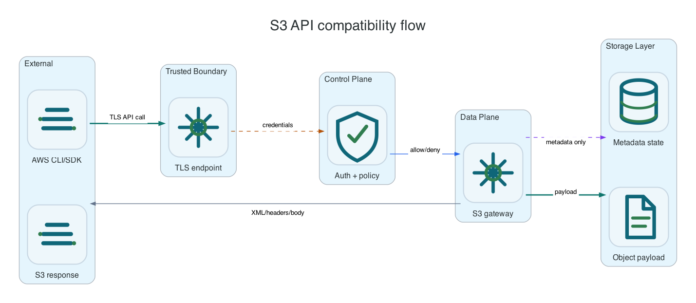

Reference / S3 API
S3 API reference pages.
Focused pages for configuring, using, and verifying each S3 data-plane capability with AWS CLI, SDK endpoint overrides, and credentials issued by the active platform control surface.
Capability Pages
Each page contains setup notes, copy-pasteable examples, and verification commands for one capability area. Start with core bucket/object API for client connectivity, then move to the feature page that matches the workload requirement.

| Workload Need | Start Here | Validation Signal |
|---|---|---|
| Basic AWS CLI or SDK access. | Core bucket/object API | Create bucket, upload object, read object, delete object. |
| Large backup or migration objects. | Multipart upload | Multipart completion returns object metadata and the payload reads back intact. |
| Immutable or compliance data. | Object Lock and retention | Protected versions resist delete and audit events record blocked attempts. |
| Lifecycle and cold placement. | Lifecycle policy and restore workflow | Healer transitions or restores objects and status is visible through S3 headers. |
| Security policy. | Policies and authorization | Allowed and denied requests match the policy and generated Secrets are scoped. |
| Analytics over object content or metadata. | S3 Select and Inventory and metadata tables | Queries return expected rows and generated report objects appear in the report bucket. |
- Core bucket/object API
- Multipart upload
- Versioning and delete markers
- Policies and authorization
- Object metadata and tagging
- Checksums and payload integrity
- Encryption and KMS-compatible wrapping
- Object Lock and retention
- Lifecycle policy and restore workflow
- Replication
- Bucket subresources
- Inventory and metadata tables
- S3 Select
- Range and conditional reads
- S3 storage class and PVC placement